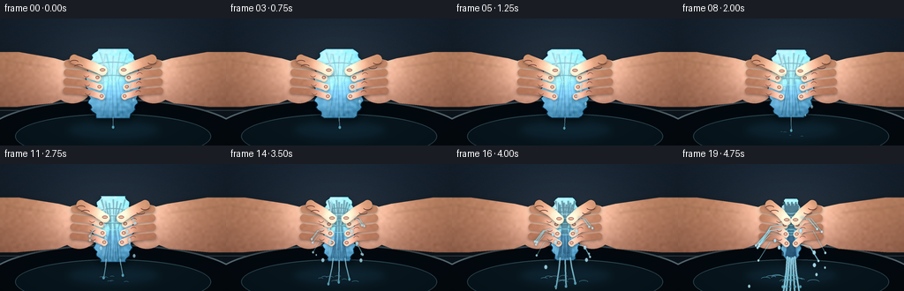
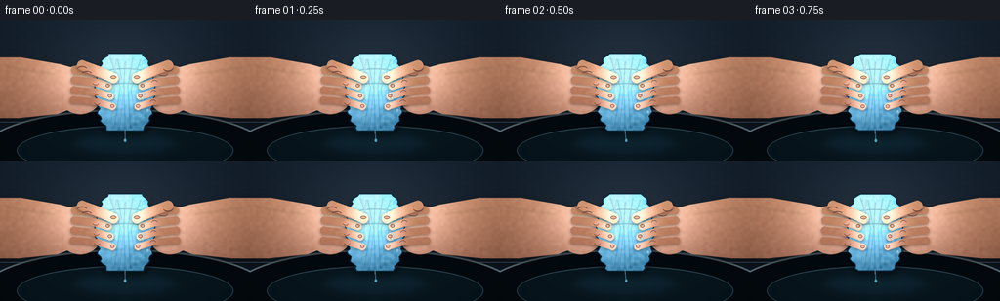
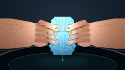
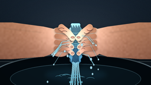

CODING AGENTS AS PIXEL WORLD MODELS
traex/GPT-5.6-Sol · phygen_015
点击播放 · 原生 RGB 像素
逐轮保存的候选
回放视频、检查图与代码变化。
每份候选均可单独播放。实际图片检查记录在下方工具轨迹中。
候选 01播放与检查图
点击播放 · 原生 RGB 像素


展开代码变化
--- 上一保存版本
+++ 本次保存版本
@@ -0,0 +1,309 @@
+from pathlib import Path
+import math
+import numpy as np
+from PIL import Image, ImageDraw, ImageFilter
+import artifact_io
+
+# Deterministic procedural rendering, supersampled for antialiased organic contours.
+W, H, N, S = 256, 144, 20, 4
+RW, RH = W*S, H*S
+rng_global = np.random.default_rng(15015)
+
+def sc(v): return int(round(v*S))
+def pts(seq): return [(sc(x), sc(y)) for x,y in seq]
+
+def rgba_layer(): return Image.new('RGBA', (RW,RH), (0,0,0,0))
+
+def composite_color(base, mask, color, texture=None):
+ """Paste a colored/texture array through an L mask."""
+ if texture is None:
+ lay = Image.new('RGBA', base.size, color)
+ else:
+ lay = Image.fromarray(texture.astype(np.uint8), 'RGBA')
+ base.alpha_composite(Image.composite(lay, Image.new('RGBA',base.size,(0,0,0,0)), mask))
+
+def mask_shape(draw_fn, blur=0):
+ m = Image.new('L',(RW,RH),0); d=ImageDraw.Draw(m)
+ draw_fn(d)
+ return m.filter(ImageFilter.GaussianBlur(sc(blur))) if blur else m
+
+def add_shadow(img, mask, offset=(0,2), blur=3, opacity=110):
+ sh = Image.new('RGBA',(RW,RH),(0,0,0,0))
+ shifted = Image.new('L',(RW,RH),0)
+ shifted.paste(mask,(sc(offset[0]),sc(offset[1])))
+ shifted=shifted.filter(ImageFilter.GaussianBlur(sc(blur)))
+ col=Image.new('RGBA',(RW,RH),(3,8,12,opacity))
+ sh.alpha_composite(Image.composite(col,Image.new('RGBA',(RW,RH)),shifted))
+ img.alpha_composite(sh)
+
+def gradient_texture(mask, top, bottom, seed, noise=5, light_center=None):
+ rr=np.random.default_rng(seed)
+ y=np.linspace(0,1,RH)[:,None,None]
+ a=np.array(top[:3],dtype=float)[None,None,:]*(1-y)+np.array(bottom[:3],dtype=float)[None,None,:]*y
+ arr=np.broadcast_to(a,(RH,RW,3)).copy()
+ # low-frequency fabric/skin texture
+ nh,nw=max(2,RH//12),max(2,RW//12)
+ coarse=rr.normal(0,noise,(nh,nw)).astype(np.float32)
+ tex=np.array(Image.fromarray(coarse,mode='F').resize((RW,RH),Image.Resampling.BICUBIC))[:,:,None]
+ arr += tex
+ if light_center:
+ yy,xx=np.mgrid[0:RH,0:RW]
+ cx,cy,rad,strength=[q*S for q in light_center]
+ glow=np.exp(-((xx-cx)**2+(yy-cy)**2)/(2*rad*rad))*strength
+ arr += glow[:,:,None]
+ alpha=np.array(mask)[:,:,None]
+ out=np.concatenate([np.clip(arr,0,255),alpha],axis=2)
+ return out
+
+def capsule_mask(path, width):
+ m=Image.new('L',(RW,RH),0); d=ImageDraw.Draw(m)
+ pp=pts(path); d.line(pp,fill=255,width=sc(width),joint='curve')
+ r=width/2
+ for x,y in (path[0],path[-1]): d.ellipse((sc(x-r),sc(y-r),sc(x+r),sc(y+r)),fill=255)
+ return m
+
+def draw_background(frame_i):
+ yy,xx=np.mgrid[0:RH,0:RW]
+ # Moody kitchen/basin background with vignette and cinematic focus.
+ base=np.zeros((RH,RW,4),dtype=np.float32)
+ grad=1-yy/RH
+ base[:,:,0]=10+12*grad; base[:,:,1]=18+18*grad; base[:,:,2]=24+25*grad
+ glow=np.exp(-(((xx-RW*.5)/(RW*.48))**2+((yy-RH*.38)/(RH*.55))**2)*2.0)
+ base[:,:,:3]+=glow[:,:,None]*18
+ noise=np.random.default_rng(91).normal(0,2.0,(RH,RW,1))
+ base[:,:,:3]+=noise; base[:,:,3]=255
+ img=Image.fromarray(np.clip(base,0,255).astype(np.uint8),'RGBA')
+ d=ImageDraw.Draw(img,'RGBA')
+ # backsplash seam and dark sink cavity
+ d.line((0,sc(104),RW,sc(104)),fill=(91,107,111,90),width=sc(1))
+ d.ellipse((sc(-18),sc(91),sc(274),sc(175)),fill=(3,10,15,245),outline=(95,117,123,150),width=sc(2))
+ d.ellipse((sc(17),sc(108),sc(239),sc(159)),fill=(8,22,29,245),outline=(45,72,81,200),width=sc(1))
+ # wet diffuse patch in basin
+ pudd=rgba_layer(); pd=ImageDraw.Draw(pudd,'RGBA')
+ pd.ellipse((sc(72),sc(112),sc(185),sc(141)),fill=(35,103,133,42))
+ pudd=pudd.filter(ImageFilter.GaussianBlur(sc(5))); img.alpha_composite(pudd)
+ return img
+
+def hand_shapes(img,p,side,frame_i):
+ # sign -1 left, +1 right. Hand translates strongly inward late in sequence.
+ sg=side
+ center=128 + sg*(46-20*p)
+ # wrist/palm silhouette behind cloth
+ if sg<0:
+ poly=[(-12,38),(22,38),(62+12*p,45),(center+8,53),(center+9,83),(59+15*p,96),(20,100),(-12,100)]
+ else:
+ poly=[(268,38),(234,38),(194-12*p,45),(center-8,53),(center-9,83),(197-15*p,96),(236,100),(268,100)]
+ def palm_draw(d):
+ d.polygon(pts(poly),fill=255)
+ d.ellipse((sc(center-24),sc(46),sc(center+24),sc(96)),fill=255)
+ pm=mask_shape(palm_draw)
+ add_shadow(img,pm,(0,3),4,125)
+ skin=gradient_texture(pm,(224,157,113,255),(119,69,56,255),800+side,3.4,
+ (center-sg*8,55,32,24))
+ composite_color(img,pm,(0,0,0,0),skin)
+ # warm rim from wet scene
+ ed=pm.filter(ImageFilter.GaussianBlur(sc(1.1)))
+ outline=Image.new('RGBA',(RW,RH),(0,0,0,0)); od=ImageDraw.Draw(outline,'RGBA')
+ od.bitmap((0,0),ed,fill=(249,191,139,28)); img.alpha_composite(outline)
+ return center, pm
+
+def cloth_mask_and_edges(p,frame_i):
+ # Puffy at first, violently compressed near the end. Edges retain irregular fabric waviness.
+ cx=128
+ half=29-17*p
+ top=34+5*p; bottom=113-5*p
+ ys=np.linspace(top,bottom,33)
+ left=[]; right=[]
+ for k,y in enumerate(ys):
+ q=(y-top)/(bottom-top)
+ bulge=math.sin(math.pi*q)**0.7
+ hw=half*(.62+.40*bulge)
+ # Pinched near grip zone, pouch-like lower half.
+ hw*=1-.19*p*math.exp(-((q-.38)/.20)**2)
+ wav=(1.1+.7*(1-p))*math.sin(k*1.72+0.5*frame_i)+.7*math.sin(k*.61+1.4)
+ left.append((cx-hw+wav,y)); right.append((cx+hw-wav*.75,y))
+ poly=left+right[::-1]
+ m=mask_shape(lambda d:d.polygon(pts(poly),fill=255))
+ return m,poly,(top,bottom,half)
+
+def render_cloth(img,p,frame_i):
+ m,poly,info=cloth_mask_and_edges(p,frame_i)
+ add_shadow(img,m,(0,4),4,145)
+ # Azure wet microfiber with vertical lighting and fine texture.
+ tex=gradient_texture(m,(43,149,183,255),(8,68,104,255),1200,9,(120,54,38,42))
+ arr=np.array(tex,dtype=np.int16)
+ yy,xx=np.mgrid[0:RH,0:RW]
+ # woven crosshatch, more visible in lit regions
+ weave=(2.5*np.sin(xx*.27)+2*np.sin(yy*.34)+1.5*np.sin((xx+yy)*.18))[:,:,None]
+ arr[:,:,:3]=np.clip(arr[:,:,:3]+weave,0,255)
+ composite_color(img,m,(0,0,0,0),arr.astype(np.uint8))
+ lay=rgba_layer(); d=ImageDraw.Draw(lay,'RGBA')
+ top,bottom,half=info
+ # compression folds converge around the grip. Number/depth scales with pressure.
+ fold_count=5+int(7*p)
+ for j in range(fold_count):
+ frac=(j+1)/(fold_count+1)
+ x0=128-half*.80+frac*half*1.60
+ phase=math.sin(j*2.1+frame_i*.10)
+ y0=top+4+j%3*2
+ y1=68+7*p+phase*3
+ y2=bottom-3
+ dark_alpha=int(45+100*p)
+ d.line(pts([(x0,y0),(128+(x0-128)*.32+phase*1.3,y1),(x0*.72+128*.28,y2)]),
+ fill=(1,30,57,dark_alpha),width=sc(1.0+1.1*p))
+ d.line(pts([(x0+1.3,y0),(129+(x0-128)*.28,y1),(x0*.72+130*.28,y2)]),
+ fill=(122,223,239,int(35+65*p)),width=sc(.55))
+ # horizontal crush wrinkles centered where fingers apply force
+ for j in range(2+int(5*p)):
+ y=53+j*(28/(2+int(5*p)))+math.sin(j+frame_i*.2)*1.2
+ span=half*(.72-.05*(j%2))
+ d.arc((sc(128-span),sc(y-4),sc(128+span),sc(y+5)),180,355,
+ fill=(3,42,70,int(70+80*p)),width=sc(1))
+ d.arc((sc(128-span+1),sc(y-3),sc(128+span-1),sc(y+4)),3,176,
+ fill=(121,220,236,int(30+48*p)),width=sc(.6))
+ # wet specular ribbons
+ d.line(pts([(119,40+p*3),(116+p*4,59),(118,86),(115+p*3,104)]),
+ fill=(190,244,248,120),width=sc(1.1))
+ d.line(pts([(139,48),(142-p*5,69),(139,96)]),fill=(105,216,235,80),width=sc(.8))
+ lay=lay.filter(ImageFilter.GaussianBlur(sc(.28))); img.alpha_composite(lay)
+ # edge outline
+ edge=rgba_layer(); ed=ImageDraw.Draw(edge,'RGBA')
+ ed.line(pts(poly+[poly[0]]),fill=(3,38,60,210),width=sc(1.1),joint='curve')
+ img.alpha_composite(edge)
+ return info
+
+def draw_fingers(img,p,side,center,frame_i):
+ sg=side
+ # Four curled fingers wrap over the cloth. Their tips close rapidly around center.
+ layer_specs=[]
+ for j in range(4):
+ y=54+j*10.2
+ base_x=center + sg*(5+0.7*j)
+ # tip nearly reaches center under maximum squeeze
+ tip_x=128 + sg*((20-2.3*j)*(1-p)+ (8.3-1.0*j)*p)
+ tip_y=y+3.2+2.0*p + (j-1.5)*.35
+ mid_x=(base_x+tip_x)/2 - sg*(4.5+1.5*p)
+ path=[(base_x,y-3),(mid_x,y-1.0),(tip_x,tip_y)]
+ width=8.6-0.45*j
+ layer_specs.append((path,width,j))
+ for path,width,j in layer_specs:
+ fm=capsule_mask(path,width)
+ add_shadow(img,fm,(0,1.2),1.6,100)
+ skin=gradient_texture(fm,(234,171,125,255),(143,82,63,255),1400+j+side*11,2.2,
+ (path[-1][0]-sg*2,path[-1][1]-2,10,28))
+ composite_color(img,fm,(0,0,0,0),skin)
+ dr=ImageDraw.Draw(img,'RGBA')
+ tx,ty=path[-1]
+ # nail plate makes hand anatomy unambiguous
+ nw=4.0; nh=2.5
+ dr.ellipse((sc(tx-nw/2),sc(ty-nh/2-1),sc(tx+nw/2),sc(ty+nh/2)),
+ fill=(244,185,155,190),outline=(114,63,57,100),width=max(1,sc(.4)))
+ # crease at bent joint
+ mx,my=path[1]
+ dr.arc((sc(mx-3.2),sc(my-2),sc(mx+3.2),sc(my+3)),20 if sg<0 else 190,160 if sg<0 else 340,
+ fill=(103,53,47,115),width=sc(.6))
+ # Thumb presses diagonally downward across upper cloth.
+ start=(center-sg*2,46)
+ tip=(128+sg*(12*(1-p)+5*p),59+5*p)
+ mid=((start[0]+tip[0])/2-sg*2,(start[1]+tip[1])/2)
+ tm=capsule_mask([start,mid,tip],10.5)
+ add_shadow(img,tm,(0,1.5),2,115)
+ skin=gradient_texture(tm,(239,177,129,255),(144,81,61,255),1700+side,2.4,(tip[0],tip[1]-3,13,30))
+ composite_color(img,tm,(0,0,0,0),skin)
+ d=ImageDraw.Draw(img,'RGBA'); tx,ty=tip
+ d.ellipse((sc(tx-3),sc(ty-2.4),sc(tx+3),sc(ty+.8)),fill=(239,181,151,200),outline=(111,62,55,110),width=sc(.5))
+ # Knuckle tension lines intensify with pressure.
+ for j in range(2):
+ kx=center-sg*(2+j*5); ky=49+j*5
+ d.arc((sc(kx-5),sc(ky-2),sc(kx+5),sc(ky+3)),190 if sg<0 else 10,345 if sg<0 else 165,
+ fill=(101,53,46,int(65+70*p)),width=sc(.65))
+
+def draw_water(img,p,frame_i,cloth_info):
+ top,bottom,half=cloth_info
+ # Emission accelerates superlinearly; individual particles fall under gravity.
+ water=rgba_layer(); d=ImageDraw.Draw(water,'RGBA')
+ intensity=.10+.90*(p**1.35)
+ # Main streams from squeezed lower cloth. They thicken and lengthen late.
+ streams=1+int(4*intensity)
+ for k in range(streams):
+ frac=(k-(streams-1)/2)/max(1,streams-1)
+ ox=128+frac*(half*.70)
+ oy=bottom-1-abs(frac)*5
+ length=7+43*intensity*(.72+.28*math.sin(k*2.4+1.2)**2)
+ bend=frac*(4+8*p)+math.sin(frame_i*.8+k)*1.1
+ path=[(ox,oy),(ox+bend*.25,oy+length*.36),(ox+bend,oy+length)]
+ d.line(pts(path),fill=(152,233,250,int(110+105*intensity)),width=sc(.55+1.25*intensity))
+ d.line(pts([(ox-.35,oy),(ox+bend*.25-.35,oy+length*.36)]),fill=(232,252,255,170),width=sc(.35))
+ ey=min(139,oy+length)
+ d.ellipse((sc(ox+bend-1.2),sc(ey-1.6),sc(ox+bend+1.2),sc(ey+1.6)),fill=(116,219,242,170))
+ # Side pressure jets appear late and shoot outward/downward.
+ if p>.28:
+ count=2+int(7*p)
+ for j in range(count):
+ sg=-1 if j%2==0 else 1
+ rr=np.random.default_rng(4000+j)
+ oy=52+rr.uniform(5,42)
+ ox=128+sg*(half*.91)
+ jet=(p-.22)*(12+rr.uniform(8,27))
+ ex=ox+sg*jet
+ ey=oy+5+jet*rr.uniform(.35,.85)
+ d.line(pts([(ox,oy),((ox+ex)/2,oy+2),(ex,ey)]),fill=(150,236,252,int(75+125*p)),width=sc(.45+rr.uniform(0,.7)))
+ d.ellipse((sc(ex-1),sc(ey-1.3),sc(ex+1),sc(ey+1.3)),fill=(193,246,255,int(110+110*p)))
+ # Ballistic droplets with frame-dependent position (clear motion in timelapse).
+ droplet_count=3+int(18*intensity)
+ for j in range(droplet_count):
+ rr=np.random.default_rng(500+j*97)
+ spawn=int(rr.integers(0,max(1,frame_i+1)))
+ age=max(0,frame_i-spawn)
+ if age>8: continue
+ sg=rr.choice([-1,1]); ox=128+sg*rr.uniform(half*.2,half*.9)
+ oy=rr.uniform(58,bottom-2)
+ vx=sg*rr.uniform(1.0,3.8)*(0.3+p)
+ x=ox+vx*age; y=oy+rr.uniform(.7,2.1)*age+.48*age*age
+ if y>141: continue
+ rad=rr.uniform(.55,1.45)*(1+.25*p)
+ d.ellipse((sc(x-rad),sc(y-rad*1.4),sc(x+rad),sc(y+rad*1.4)),fill=(176,237,249,int(105+120*p)))
+ d.ellipse((sc(x-rad*.3),sc(y-rad),sc(x+rad*.15),sc(y-rad*.4)),fill=(250,255,255,180))
+ # Basin splashes grow under the stream impact.
+ if p>.18:
+ for j in range(3+int(9*p)):
+ rr=np.random.default_rng(700+j)
+ x=128+rr.uniform(-25,25)*(0.4+p*.8)
+ y=128+rr.uniform(-1,6)
+ span=rr.uniform(2,8)*p
+ d.arc((sc(x-span),sc(y-span*.38),sc(x+span),sc(y+span*.38)),185,355,
+ fill=(126,222,243,int(70+105*p)),width=sc(.55))
+ # Soft glow plus sharp core.
+ glow=water.filter(ImageFilter.GaussianBlur(sc(1.25)))
+ img.alpha_composite(glow); img.alpha_composite(water)
+
+def render_frame(i):
+ t=i/(N-1)
+ # Deliberately accelerative squeeze; last half conveys rapid intensification.
+ p=t**1.75
+ img=draw_background(i)
+ lc,_=hand_shapes(img,p,-1,i)
+ rc,_=hand_shapes(img,p,1,i)
+ info=render_cloth(img,p,i)
+ draw_fingers(img,p,-1,lc,i)
+ draw_fingers(img,p,1,rc,i)
+ draw_water(img,p,i,info)
+ # Damp shine on wrists and global foreground focus/vignette.
+ shine=rgba_layer(); sd=ImageDraw.Draw(shine,'RGBA')
+ sd.line(pts([(8,48),(56+14*p,55)]),fill=(255,208,161,55),width=sc(1.2))
+ sd.line(pts([(248,48),(200-14*p,55)]),fill=(255,208,161,55),width=sc(1.2))
+ img.alpha_composite(shine.filter(ImageFilter.GaussianBlur(sc(.7))))
+ arr=np.array(img.convert('RGB').resize((W,H),Image.Resampling.LANCZOS),dtype=np.float32)
+ yy,xx=np.mgrid[0:H,0:W]
+ vig=1-.23*np.clip(((xx-W/2)/(W*.68))**2+((yy-H/2)/(H*.82))**2,0,1)
+ arr*=vig[:,:,None]
+ # very subtle cool grade
+ arr[:,:,2]=np.clip(arr[:,:,2]*1.03,0,255)
+ return np.clip(arr,0,255).astype(np.uint8)
+
+def main():
+ frames=np.stack([render_frame(i) for i in range(N)],axis=0)
+ artifact_io.save(frames,Path(__file__).resolve().parent)
+
+if __name__=='__main__':
+ main()
可观测工具轨迹
实际执行的命令与返回图片。
命令 1exit 0
/bin/bash -lc "cat prompt.txt && printf '\\n--- GENERATION_RULES.md ---\\n' && cat GENERATION_RULES.md"
命令 2exit 0
/bin/bash -lc "cat task_spec.json && printf '\\n--- FILES ---\\n' && find . -maxdepth 2 -type f -printf '%p\\n' | sort"
命令 3exit 0
/bin/bash -lc 'cat artifact_io.py'
命令 4exit 0
/bin/bash -lc "cat > generate.py <<'PY'
from pathlib import Path
import math
import numpy as np
from PIL import Image, ImageDraw, ImageFilter
import artifact_io
# Deterministic procedural rendering, supersampled for antialiased organic contours.
W, H, N, S = 256, 144, 20, 4
RW, RH = W*S, H*S
rng_global = np.random.default_rng(15015)
def sc(v): return int(round(v*S))
def pts(seq): return [(sc(x), sc(y)) for x,y in seq]
def rgba_layer(): return Image.new('RGBA', (RW,RH), (0,0,0,0))
def composite_color(base, mask, color, texture=None):
\"\"\"Paste a colored/texture array through an L mask.\"\"\"
if texture is None:
lay = Image.new('RGBA', base.size, color)
else:
lay = Image.fromarray(texture.astype(np.uint8), 'RGBA')
base.alpha_composite(Image.composite(lay, Image.new('RGBA',base.size,(0,0,0,0)), mask))
def mask_shape(draw_fn, blur=0):
m = Image.new('L',(RW,RH),0); d=ImageDraw.Draw(m)
draw_fn(d)
return m.filter(ImageFilter.GaussianBlur(sc(blur))) if blur else m
def add_shadow(img, mask, offset=(0,2), blur=3, opacity=110):
sh = Image.new('RGBA',(RW,RH),(0,0,0,0))
shifted = Image.new('L',(RW,RH),0)
shifted.paste(mask,(sc(offset[0]),sc(offset[1])))
shifted=shifted.filter(ImageFilter.GaussianBlur(sc(blur)))
col=Image.new('RGBA',(RW,RH),(3,8,12,opacity))
sh.alpha_composite(Image.composite(col,Image.new('RGBA',(RW,RH)),shifted))
img.alpha_composite(sh)
def gradient_texture(mask, top, bottom, seed, noise=5, light_center=None):
rr=np.random.default_rng(seed)
y=np.linspace(0,1,RH)[:,None,None]
a=np.array(top[:3],dtype=float)[None,None,:]*(1-y)+np.array(bottom[:3],dtype=float)[None,None,:]*y
arr=np.broadcast_to(a,(RH,RW,3)).copy()
# low-frequency fabric/skin texture
nh,nw=max(2,RH//12),max(2,RW//12)
coarse=rr.normal(0,noise,(nh,nw)).astype(np.float32)
tex=np.array(Image.fromarray(coarse,mode='F').resize((RW,RH),Image.Resampling.BICUBIC))[:,:,None]
arr += tex
if light_center:
yy,xx=np.mgrid[0:RH,0:RW]
cx,cy,rad,strength=[q*S for q in light_center]
glow=np.exp(-((xx-cx)**2+(yy-cy)**2)/(2*rad*rad))*strength
arr += glow[:,:,None]
alpha=np.array(mask)[:,:,None]
out=np.concatenate([np.clip(arr,0,255),alpha],axis=2)
return out
def capsule_mask(path, width):
m=Image.new('L',(RW,RH),0); d=ImageDraw.Draw(m)
pp=pts(path); d.line(pp,fill=255,width=sc(width),joint='curve')
r=width/2
for x,y in (path[0],path[-1]): d.ellipse((sc(x-r),sc(y-r),sc(x+r),sc(y+r)),fill=255)
return m
def draw_background(frame_i):
yy,xx=np.mgrid[0:RH,0:RW]
# Moody kitchen/basin background with vignette and cinematic focus.
base=np.zeros((RH,RW,4),dtype=np.float32)
grad=1-yy/RH
base[:,:,0]=10+12*grad; base[:,:,1]=18+18*grad; base[:,:,2]=24+25*grad
glow=np.exp(-(((xx-RW*.5)/(RW*.48))**2+((yy-RH*.38)/(RH*.55))**2)*2.0)
base[:,:,:3]+=glow[:,:,None]*18
noise=np.random.default_rng(91).normal(0,2.0,(RH,RW,1))
base[:,:,:3]+=noise; base[:,:,3]=255
img=Image.fromarray(np.clip(base,0,255).astype(np.uint8),'RGBA')
d=ImageDraw.Draw(img,'RGBA')
# backsplash seam and dark sink cavity
d.line((0,sc(104),RW,sc(104)),fill=(91,107,111,90),width=sc(1))
d.ellipse((sc(-18),sc(91),sc(274),sc(175)),fill=(3,10,15,245),outline=(95,117,123,150),width=sc(2))
d.ellipse((sc(17),sc(108),sc(239),sc(159)),fill=(8,22,29,245),outline=(45,72,81,200),width=sc(1))
# wet diffuse patch in basin
pudd=rgba_layer(); pd=ImageDraw.Draw(pudd,'RGBA')
pd.ellipse((sc(72),sc(112),sc(185),sc(141)),fill=(35,103,133,42))
pudd=pudd.filter(ImageFilter.GaussianBlur(sc(5))); img.alpha_composite(pudd)
return img
def hand_shapes(img,p,side,frame_i):
# sign -1 left, +1 right. Hand translates strongly inward late in sequence.
sg=side
center=128 + sg*(46-20*p)
# wrist/palm silhouette behind cloth
if sg<0:
poly=[(-12,38),(22,38),(62+12*p,45),(center+8,53),(center+9,83),(59+15*p,96),(20,100),(-12,100)]
else:
poly=[(268,38),(234,38),(194-12*p,45),(center-8,53),(center-9,83),(197-15*p,96),(236,100),(268,100)]
def palm_draw(d):
d.polygon(pts(poly),fill=255)
d.ellipse((sc(center-24),sc(46),sc(center+24),sc(96)),fill=255)
pm=mask_shape(palm_draw)
add_shadow(img,pm,(0,3),4,125)
skin=gradient_texture(pm,(224,157,113,255),(119,69,56,255),800+side,3.4,
(center-sg*8,55,32,24))
composite_color(img,pm,(0,0,0,0),skin)
# warm rim from wet scene
ed=pm.filter(ImageFilter.GaussianBlur(sc(1.1)))
outline=Image.new('RGBA',(RW,RH),(0,0,0,0)); od=ImageDraw.Draw(outline,'RGBA')
od.bitmap((0,0),ed,fill=(249,191,139,28)); img.alpha_composite(outline)
return center, pm
def cloth_mask_and_edges(p,frame_i):
# Puffy at first, violently compressed near the end. Edges retain irregular fabric waviness.
cx=128
half=29-17*p
top=34+5*p; bottom=113-5*p
ys=np.linspace(top,bottom,33)
left=[]; right=[]
for k,y in enumerate(ys):
q=(y-top)/(bottom-top)
bulge=math.sin(math.pi*q)**0.7
hw=half*(.62+.40*bulge)
# Pinched near grip zone, pouch-like lower half.
hw*=1-.19*p*math.exp(-((q-.38)/.20)**2)
wav=(1.1+.7*(1-p))*math.sin(k*1.72+0.5*frame_i)+.7*math.sin(k*.61+1.4)
left.append((cx-hw+wav,y)); right.append((cx+hw-wav*.75,y))
poly=left+right[::-1]
m=mask_shape(lambda d:d.polygon(pts(poly),fill=255))
return m,poly,(top,bottom,half)
def render_cloth(img,p,frame_i):
m,poly,info=cloth_mask_and_edges(p,frame_i)
add_shadow(img,m,(0,4),4,145)
# Azure wet microfiber with vertical lighting and fine texture.
tex=gradient_texture(m,(43,149,183,255),(8,68,104,255),1200,9,(120,54,38,42))
arr=np.array(tex,dtype=np.int16)
yy,xx=np.mgrid[0:RH,0:RW]
# woven crosshatch, more visible in lit regions
weave=(2.5*np.sin(xx*.27)+2*np.sin(yy*.34)+1.5*np.sin((xx+yy)*.18))[:,:,None]
arr[:,:,:3]=np.clip(arr[:,:,:3]+weave,0,255)
composite_color(img,m,(0,0,0,0),arr.astype(np.uint8))
lay=rgba_layer(); d=ImageDraw.Draw(lay,'RGBA')
top,bottom,half=info
# compression folds converge around the grip. Number/depth scales with pressure.
fold_count=5+int(7*p)
for j in range(fold_count):
frac=(j+1)/(fold_count+1)
x0=128-half*.80+frac*half*1.60
phase=math.sin(j*2.1+frame_i*.10)
y0=top+4+j%3*2
y1=68+7*p+phase*3
y2=bottom-3
dark_alpha=int(45+100*p)
d.line(pts([(x0,y0),(128+(x0-128)*.32+phase*1.3,y1),(x0*.72+128*.28,y2)]),
fill=(1,30,57,dark_alpha),width=sc(1.0+1.1*p))
d.line(pts([(x0+1.3,y0),(129+(x0-128)*.28,y1),(x0*.72+130*.28,y2)]),
fill=(122,223,239,int(35+65*p)),width=sc(.55))
# horizontal crush wrinkles centered where fingers apply force
for j in range(2+int(5*p)):
y=53+j*(28/(2+int(5*p)))+math.sin(j+frame_i*.2)*1.2
span=half*(.72-.05*(j%2))
d.arc((sc(128-span),sc(y-4),sc(128+span),sc(y+5)),180,355,
fill=(3,42,70,int(70+80*p)),width=sc(1))
d.arc((sc(128-span+1),sc(y-3),sc(128+span-1),sc(y+4)),3,176,
fill=(121,220,236,int(30+48*p)),width=sc(.6))
# wet specular ribbons
d.line(pts([(119,40+p*3),(116+p*4,59),(118,86),(115+p*3,104)]),
fill=(190,244,248,120),width=sc(1.1))
d.line(pts([(139,48),(142-p*5,69),(139,96)]),fill=(105,216,235,80),width=sc(.8))
lay=lay.filter(ImageFilter.GaussianBlur(sc(.28))); img.alpha_composite(lay)
# edge outline
edge=rgba_layer(); ed=ImageDraw.Draw(edge,'RGBA')
ed.line(pts(poly+[poly[0]]),fill=(3,38,60,210),width=sc(1.1),joint='curve')
img.alpha_composite(edge)
return info
def draw_fingers(img,p,side,center,frame_i):
sg=side
# Four curled fingers wrap over the cloth. Their tips close rapidly around center.
layer_specs=[]
for j in range(4):
y=54+j*10.2
base_x=center + sg*(5+0.7*j)
# tip nearly reaches center under maximum squeeze
tip_x=128 + sg*((20-2.3*j)*(1-p)+ (8.3-1.0*j)*p)
tip_y=y+3.2+2.0*p + (j-1.5)*.35
mid_x=(base_x+tip_x)/2 - sg*(4.5+1.5*p)
path=[(base_x,y-3),(mid_x,y-1.0),(tip_x,tip_y)]
width=8.6-0.45*j
layer_specs.append((path,width,j))
for path,width,j in layer_specs:
fm=capsule_mask(path,width)
add_shadow(img,fm,(0,1.2),1.6,100)
skin=gradient_texture(fm,(234,171,125,255),(143,82,63,255),1400+j+side*11,2.2,
(path[-1][0]-sg*2,path[-1][1]-2,10,28))
composite_color(img,fm,(0,0,0,0),skin)
dr=ImageDraw.Draw(img,'RGBA')
tx,ty=path[-1]
# nail plate makes hand anatomy unambiguous
nw=4.0; nh=2.5
dr.ellipse((sc(tx-nw/2),sc(ty-nh/2-1),sc(tx+nw/2),sc(ty+nh/2)),
fill=(244,185,155,190),outline=(114,63,57,100),width=max(1,sc(.4)))
# crease at bent joint
mx,my=path[1]
dr.arc((sc(mx-3.2),sc(my-2),sc(mx+3.2),sc(my+3)),20 if sg<0 else 190,160 if sg<0 else 340,
fill=(103,53,47,115),width=sc(.6))
# Thumb presses diagonally downward across upper cloth.
start=(center-sg*2,46)
tip=(128+sg*(12*(1-p)+5*p),59+5*p)
mid=((start[0]+tip[0])/2-sg*2,(start[1]+tip[1])/2)
tm=capsule_mask([start,mid,tip],10.5)
add_shadow(img,tm,(0,1.5),2,115)
skin=gradient_texture(tm,(239,177,129,255),(144,81,61,255),1700+side,2.4,(tip[0],tip[1]-3,13,30))
composite_color(img,tm,(0,0,0,0),skin)
d=ImageDraw.Draw(img,'RGBA'); tx,ty=tip
d.ellipse((sc(tx-3),sc(ty-2.4),sc(tx+3),sc(ty+.8)),fill=(239,181,151,200),outline=(111,62,55,110),width=sc(.5))
# Knuckle tension lines intensify with pressure.
for j in range(2):
kx=center-sg*(2+j*5); ky=49+j*5
d.arc((sc(kx-5),sc(ky-2),sc(kx+5),sc(ky+3)),190 if sg<0 else 10,345 if sg<0 else 165,
fill=(101,53,46,int(65+70*p)),width=sc(.65))
def draw_water(img,p,frame_i,cloth_info):
top,bottom,half=cloth_info
# Emission accelerates superlinearly; individual particles fall under gravity.
water=rgba_layer(); d=ImageDraw.Draw(water,'RGBA')
intensity=.10+.90*(p**1.35)
# Main streams from squeezed lower cloth. They thicken and lengthen late.
streams=1+int(4*intensity)
for k in range(streams):
frac=(k-(streams-1)/2)/max(1,streams-1)
ox=128+frac*(half*.70)
oy=bottom-1-abs(frac)*5
length=7+43*intensity*(.72+.28*math.sin(k*2.4+1.2)**2)
bend=frac*(4+8*p)+math.sin(frame_i*.8+k)*1.1
path=[(ox,oy),(ox+bend*.25,oy+length*.36),(ox+bend,oy+length)]
d.line(pts(path),fill=(152,233,250,int(110+105*intensity)),width=sc(.55+1.25*intensity))
d.line(pts([(ox-.35,oy),(ox+bend*.25-.35,oy+length*.36)]),fill=(232,252,255,170),width=sc(.35))
ey=min(139,oy+length)
d.ellipse((sc(ox+bend-1.2),sc(ey-1.6),sc(ox+bend+1.2),sc(ey+1.6)),fill=(116,219,242,170))
# Side pressure jets appear late and shoot outward/downward.
if p>.28:
count=2+int(7*p)
for j in range(count):
sg=-1 if j%2==0 else 1
rr=np.random.default_rng(4000+j)
oy=52+rr.uniform(5,42)
ox=128+sg*(half*.91)
jet=(p-.22)*(12+rr.uniform(8,27))
ex=ox+sg*jet
ey=oy+5+jet*rr.uniform(.35,.85)
d.line(pts([(ox,oy),((ox+ex)/2,oy+2),(ex,ey)]),fill=(150,236,252,int(75+125*p)),width=sc(.45+rr.uniform(0,.7)))
d.ellipse((sc(ex-1),sc(ey-1.3),sc(ex+1),sc(ey+1.3)),fill=(193,246,255,int(110+110*p)))
# Ballistic droplets with frame-dependent position (clear motion in timelapse).
droplet_count=3+int(18*intensity)
for j in range(droplet_count):
rr=np.random.default_rng(500+j*97)
spawn=int(rr.integers(0,max(1,frame_i+1)))
age=max(0,frame_i-spawn)
if age>8: continue
sg=rr.choice([-1,1]); ox=128+sg*rr.uniform(half*.2,half*.9)
oy=rr.uniform(58,bottom-2)
vx=sg*rr.uniform(1.0,3.8)*(0.3+p)
x=ox+vx*age; y=oy+rr.uniform(.7,2.1)*age+.48*age*age
if y>141: continue
rad=rr.uniform(.55,1.45)*(1+.25*p)
d.ellipse((sc(x-rad),sc(y-rad*1.4),sc(x+rad),sc(y+rad*1.4)),fill=(176,237,249,int(105+120*p)))
d.ellipse((sc(x-rad*.3),sc(y-rad),sc(x+rad*.15),sc(y-rad*.4)),fill=(250,255,255,180))
# Basin splashes grow under the stream impact.
if p>.18:
for j in range(3+int(9*p)):
rr=np.random.default_rng(700+j)
x=128+rr.uniform(-25,25)*(0.4+p*.8)
y=128+rr.uniform(-1,6)
span=rr.uniform(2,8)*p
d.arc((sc(x-span),sc(y-span*.38),sc(x+span),sc(y+span*.38)),185,355,
fill=(126,222,243,int(70+105*p)),width=sc(.55))
# Soft glow plus sharp core.
glow=water.filter(ImageFilter.GaussianBlur(sc(1.25)))
img.alpha_composite(glow); img.alpha_composite(water)
def render_frame(i):
t=i/(N-1)
# Deliberately accelerative squeeze; last half conveys rapid intensification.
p=t**1.75
img=draw_background(i)
lc,_=hand_shapes(img,p,-1,i)
rc,_=hand_shapes(img,p,1,i)
info=render_cloth(img,p,i)
draw_fingers(img,p,-1,lc,i)
draw_fingers(img,p,1,rc,i)
draw_water(img,p,i,info)
# Damp shine on wrists and global foreground focus/vignette.
shine=rgba_layer(); sd=ImageDraw.Draw(shine,'RGBA')
sd.line(pts([(8,48),(56+14*p,55)]),fill=(255,208,161,55),width=sc(1.2))
sd.line(pts([(248,48),(200-14*p,55)]),fill=(255,208,161,55),width=sc(1.2))
img.alpha_composite(shine.filter(ImageFilter.GaussianBlur(sc(.7))))
arr=np.array(img.convert('RGB').resize((W,H),Image.Resampling.LANCZOS),dtype=np.float32)
yy,xx=np.mgrid[0:H,0:W]
vig=1-.23*np.clip(((xx-W/2)/(W*.68))**2+((yy-H/2)/(H*.82))**2,0,1)
arr*=vig[:,:,None]
# very subtle cool grade
arr[:,:,2]=np.clip(arr[:,:,2]*1.03,0,255)
return np.clip(arr,0,255).astype(np.uint8)
def main():
frames=np.stack([render_frame(i) for i in range(N)],axis=0)
artifact_io.save(frames,Path(__file__).resolve().parent)
if __name__=='__main__':
main()
PY
python generate.py
python - <<'PY'
import numpy as np
from PIL import Image
z=np.load('pixels.npz')['pixels']
print('pixels:',z.shape,z.dtype,'unique packed:',len(np.unique(z)))
print('frames:',len(list(__import__('pathlib').Path('frames').glob('*.png'))))
PY"命令 5exit 0
/bin/bash -lc "python - <<'PY'
from PIL import Image
from pathlib import Path
import numpy as np
files=sorted(Path('frames').glob('*.png'))
assert len(files)==20
frames=np.stack([np.asarray(Image.open(p).convert('RGB')) for p in files])
assert frames.shape==(20,144,256,3) and frames.dtype==np.uint8
# temporal motion statistics
mad=np.abs(np.diff(frames.astype(np.int16),axis=0)).mean(axis=(1,2,3))
print('validated',frames.shape,frames.dtype)
print('adjacent-frame MAD:',np.round(mad,2).tolist())
print('first-last MAD:',round(float(np.abs(frames[-1].astype(int)-frames[0].astype(int)).mean()),2))
print('outputs:',', '.join(p.name for p in Path('.').iterdir() if p.name in {'pixels.npz','index.html','inspection.png','transition_check.png','generate.py'}))
PY"视觉工具实际返回图片 1

视觉工具实际返回图片 2

视觉工具实际返回图片 3

保存候选 1 份；完成命令 5 次；可验证图片返回 3 张。原始 API 响应与完整日志保留在本地。